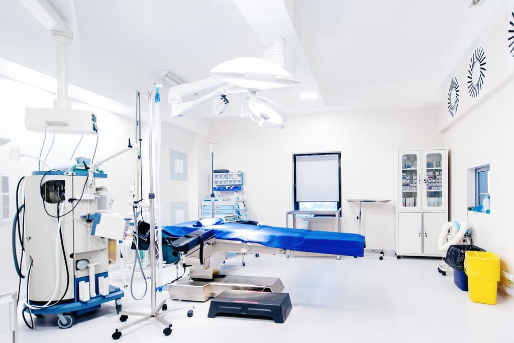
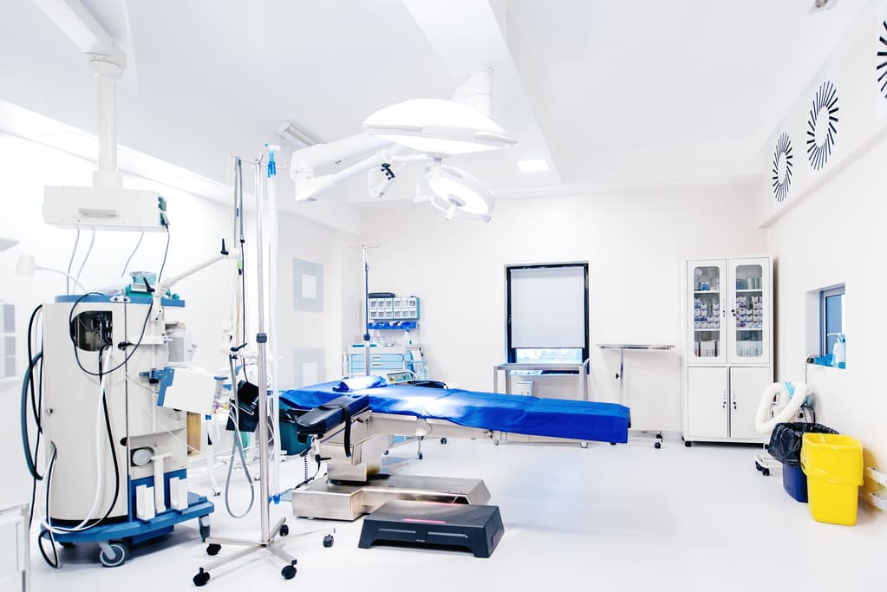

Sobre a Clínica Saúde Corporal
Venha nos conhecer, estamos sempre abertos para uma visita
Um pouco da nossa história.
Fundada em 1995 pelo Dr. Nome e sobrenome, especialista em doenças do trato intestinal, obesidade, e cirurgia de redução estomacal. Nossa clínica antes conhecida apenas como "Clínicas Saúde", oferecia os serviços de nutrição e dieteca, conforme o passar do tempo percebemos que tratar o corpo é muito bom, mas para garantir a eficacia desse tratamento também era necessário tratar a mente. Então em 2005 incorporamos também os serviços de psicologia em nossa clinica para melhor atender nossos pacientes.
Hoje em dia oferecemos uma gama completa de serviços que vão desde uma simples dieta para perda de peso, a programas completos para a conquista do corpo perfeito. Nossas intalações incluem:
- Clínica completa com atendimento humanizado e especializado.
- Profissionais especializados para o atendimento das suas necessidades.
- Atendimento pediátrico para combater a obesidade infantil.
- Centro para exames relativos ao trato intestinal.
- Exames de sangue com laboratório próprio.
- Salas de cirurgia para redução estomacal e outras cirurgias relativas ao trato intestinal.
- Salas de recuperação para os recem operados, inclusive com refeições, TV e serviços de streaming.
- Academia completa com horários agendados e personal trainers exclusivos.
- Piscinas aquecidas para hidroginastica.
- Playground para os baixinhos.
Nossas Instalações
 
